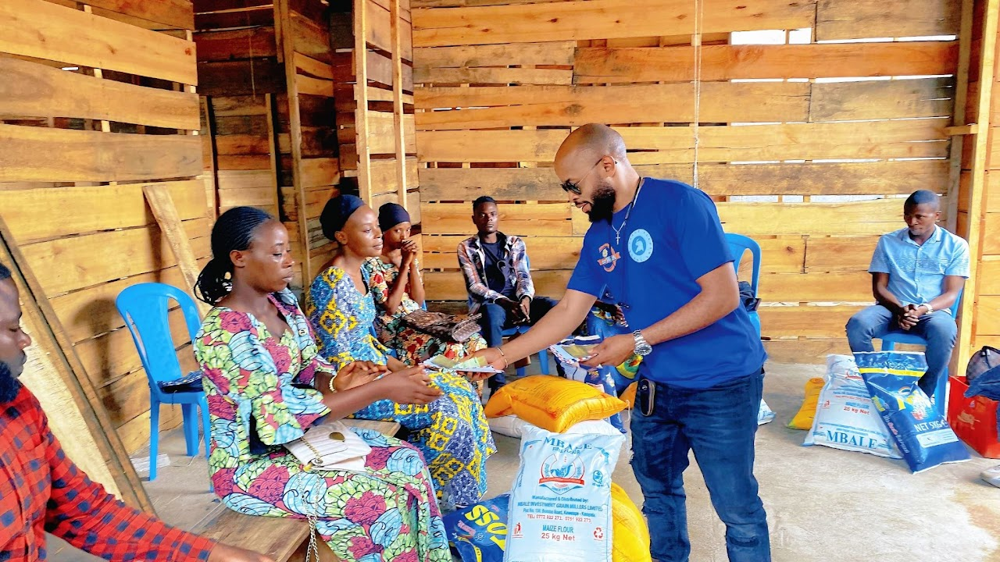

Peace Today.
Through the Peace Today platform, we inform our audience about security and peace in the DRC. We examine issues related to the police, defense, justice, respect for human rights, and national cohesion to forecast peace and stability.

On Sunday, November 27, 2022, the Congolese Peace Academy leadership team visited the Kanyaruchinya IDP camp, where 3,999 families from Tongo, Rugari, Rutshuru, Tchegera, Nyiragongo, and some from Masisi have come to seek refuge as the war intensifies. The camp president noted that it is currently very difficult to know exactly how many people have arrived by the end of the weekend because there are many sudden arrivals in the camp.
Unfortunately, the IDPs' hopes for peace and security in Kanyaruchinya are facing enormous difficulties, including the lack of adequate shelter, food, water, toilets, and medicine. Thus, people who flee the comfort of their homes to seek safety around the city of Goma face extreme desolation, as "living in this fragile, unhealthy and overcrowded camp is nothing short of hell," they say.
The highlight of the visit was the story of Sekajumba Kajibwami. Mr. Kajibwami is a seventy-year-old man from Rugari, extremely ill, afflicted by disease and hunger, who is currently in the camp without family or support. On Sunday afternoon, Mr. Kajibwami was expelled from a nearby hospital/clinic on a stretcher with a body bag instead of a pillow, suggesting that they were disposing of the human body of a sick and starving man who is not yet dead.
Everyone who witnessed this event was shocked. Looking into the man's eyes, everyone could tell that Mr. Kajibwami was sick, tired, and hungry but not yet dead. He could still talk and eat, or at least barely. He was offered a doughnut, and he ate and swallowed. Kajibwami's story is an illustration of the current conditions in the Kanyaruchinya "concentration camp".
We believe that Mr. Kajibwami's life could still be saved if people of goodwill acted immediately to help him gain access not only to urgent health care but also to food.
Human life is sacred and should be treated as such.
Humanitarian crisis in Eastern Congo.
Since the 1990s, the Democratic Republic of Congo (DRC) has been facing intractable conflicts and recurrent wars. Even with elected governments starting in 2006 following the implementation of multiple peace agreements, the country still faces considerable challenges in consolidating peace throughout its territory. The eastern regions of the DRC have historically experienced high levels of insecurity and repeated incidences of war and violence, often due to interference from neighboring countries.
Recurrent episodes of violence, both in the east and in other parts of the DRC, indicate that structural problems deeply rooted in society hamper the process of conflict transformation and peace. Therefore, to achieve sustainable peace in the DRC and the Great Lakes region, we must address the problems.
Stand with the families of Eastern DRC.
Your support helps Congo Peace Academy deliver urgent relief and build the foundations for lasting peace across the region.